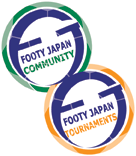

Footy Japan Charity 6's
- When: Monday March 21st 2004
- Time: 9:30am - 4:00pm
- Where: YC&AC
- Teams: Teams will register up to 10 players. On-field will use 6 players incl GK. Other 4 players may sub on and off multiple times
- Format: League followed by knockout matches. (To be determined)
- Cost: Team registration will be ¥25,000. (+¥1,000 per player for ticket to after party).
- Charity: Through sponsorship, this tournament will be used to raise money for UNICEF.
- Sponsors: We are looking for corporate sponsors for this event. please CONTACT US. for more details.
- Registration Period: Registration will end March 10th, to register, please
CONTACT US.
- Special Rules: 3 pitches (50m X 30m) will be set up, across the normal pitch. Regular FIFA rules will be played but no off-sides. Games will be 10 minutes each way.
- Teams entering to date: YCAC1, France FC, BEFC, Hibernian, BFC, Swiss Kickers, Barclays, Santos FC, Saitama JETs, Career Cross FC, Wallstreet Geckoes, PWC Advisory, French Masters.
|
Sponsored by:
|
|